This project was my senior thesis capstone project for my degree at Rose-Hulman. I worked on this project with a team of 3 other students, David Gottlieb, Dylan Lutrell, and Helen Wang, under the supervision of Dr. Yoder. In this project we ambitiously tried to do three difficult things simultaniously, hoping that they would synergize. These three dimensions to the research were:
- Improving upon developmental neural architectures
- Using uncertainty estimation to guide learning
- Using adaptive hyperparameter optimization to adjust learning parameters on the fly
While we all influenced all parts of the system, I was mainly responisble for the adaptive hyperparameter optimization feature. This subsystem was initially inspired by my previous research with Dr. Yoder on developmental learning. Despite this inspiration the idea pivoted from an evolutionary system to a RL agent which recieved rewards based on the testing performance of the main system. While a few experiments showed some promise, the overall system was not really able to compete with previous methods and no publication came of this research. Despite the lack of success, I learned a lot from this experience about scope management, academic research, hyperparameter optimization and reinforcement learning.


In the 2022-23 school year, as part of my undergraduate studies at Rose Hulman, I took part in undergraduate research projects with Dr. Jason Yoder and my peer Jacob Ashworth. In this research we used the NK Fitness Landscape model to simulate and increase our understanding of the interaction between Evolution and Development in population optimization. This research is expanded on the research published in Artificial Life in 2022, by Yoder et.al. I worked to produce significant performance improvements, dynamic landscapes, a wider variety of summary statistics, and a more robust architecture. We used tools to study the ways in which learning strategies develop in a variety of scenarios, and to learn about how various aspects of the environement impact the evolution of development. I then worked with Dr. Yoder and Jacob Ashworth to document and publish our work in Artificial Life 2023. This work also partially served as inspiration for my senior thesis research on dynamic hyperparameter optimization in machine learning.
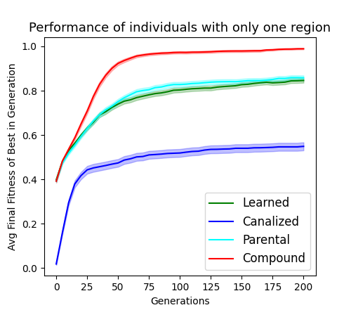
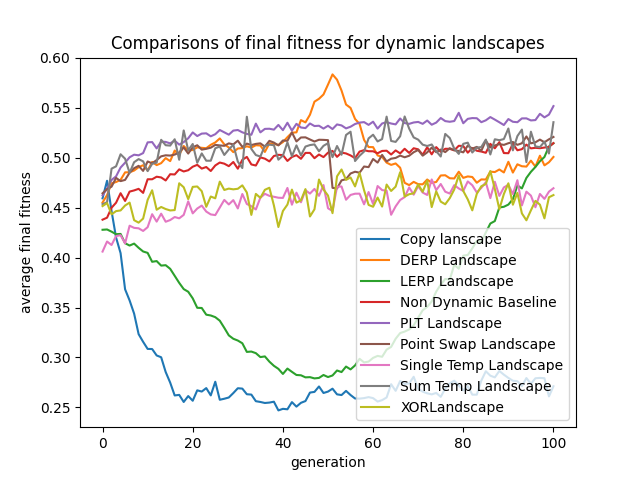
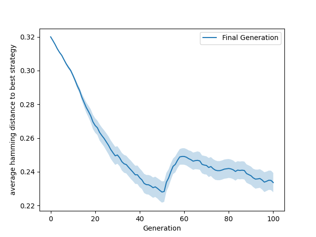

During the 2023-24 school year I continued working on this project with Dr. Yoder and Jacob Ashworth, as well as two new team members, Alexa Renner, and Émile Marois. Due to my ongoing senior thesis project I took on a somewhat more advisory position, though I remained an integral member of the team as we used the model framework to research genetic exaptations. In this work we designed a variety of new techniques with which to emulate real world evolution and custom fitness landscapes on which to test for exaptations. The team then worked together to get this research was published in Artificial Life 2024.
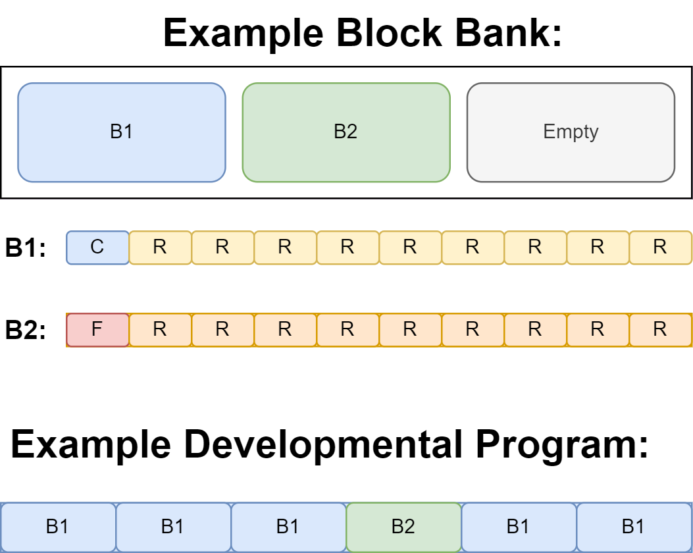
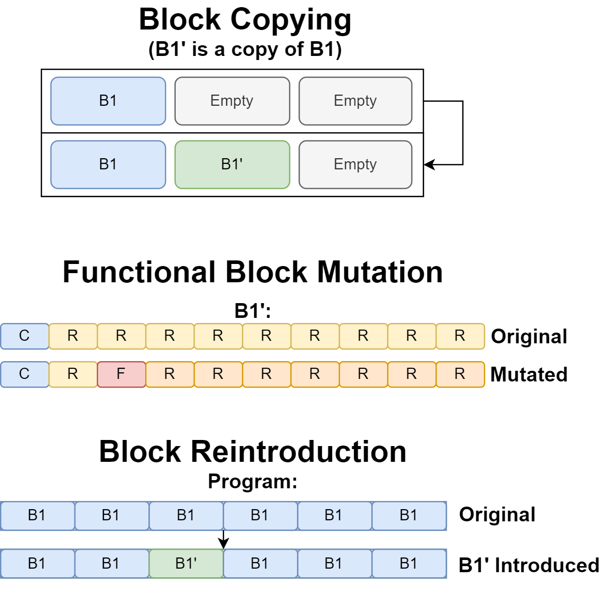
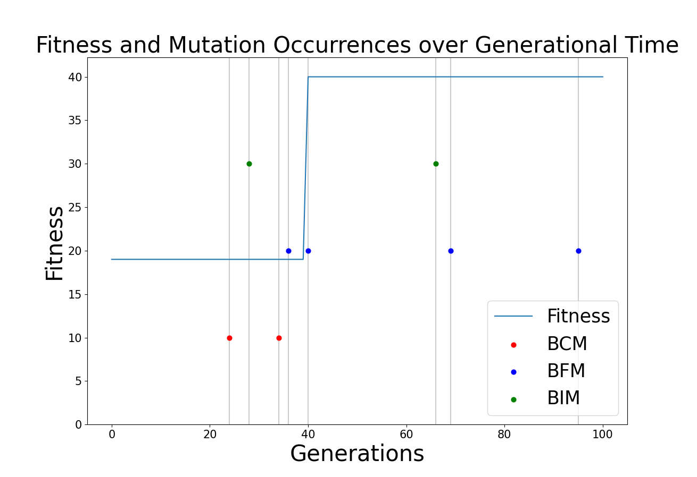
In this project I worked with a relatively large team (for a school project) of about 10-20 students with direct oversight from Dr. Shibberu and Dr. Boutell to produce an AI chatbot which could assist freshmen with certain advisory tasks. The goal of this project was to alliveate some of the existing pressure on freshman advisors by redirecting some more easily answerable questions to a chatbot. To ensure the utility of this system, we conducted some software requirements engineering to learn from freshmen and advisors what would be neccesary from such a system. This system used RAG and system prompting to retrieve information relevant to student queries to ensure more reliable answers to student questions. Unfortunately despite our teams best efforts we were unable to prevent the system from hallucintating or providing incorrect feedback. This may is likely due to intentionally using smaller models for budgetary reasons and attempting to compensate using RAG and prompting. While the system never saw widespread use or adoption due to concerns over reliablity of responses, working on this project and with this team taught me a lot about working with LLM integrated systems.
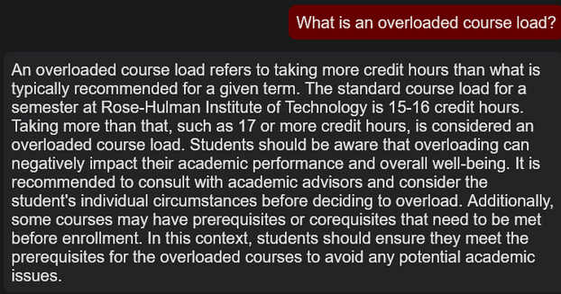
As a final project for my Object Oriented Design Principles course at Rose-Hulman, I worked on a team of three to develop a software which could take compiled java code and produce a UML class diagram of that code. It additionally labelled the object oriented design principles, and design principle violations present in the given code. It was built using test driven development and had complete test coverage.
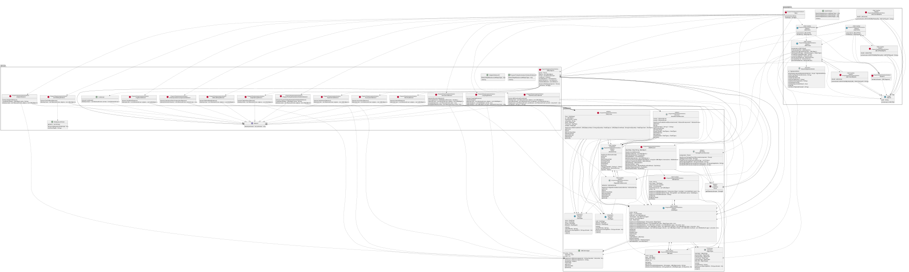
Queue is a web application dedicated to helping users prioritize their tasks using computer science principles and the priority queue data structure. Users are able to input thier obligations into the website, and select a function for the priority of the project in the queue. These functions operate on the variables of the item in order to prioritize the queue on each refresh. This allows items with sooner due dates to pass those of higher priority as the due dates arrive. Power users can also choose to define their own functions in order to better fit their own needs.
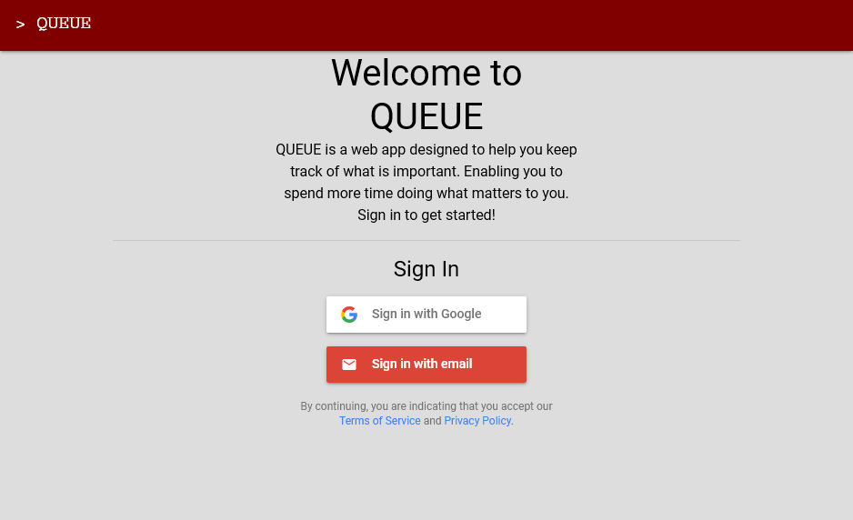
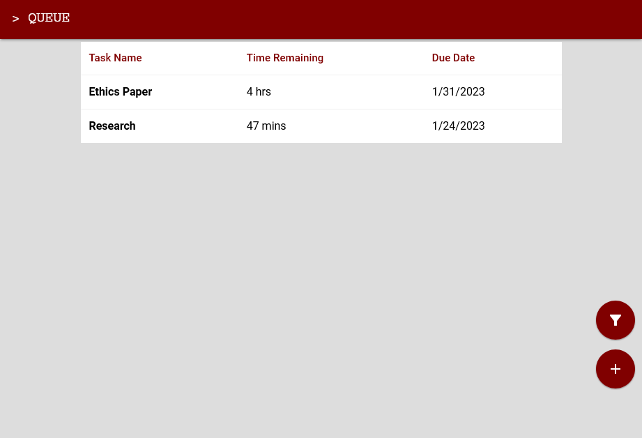
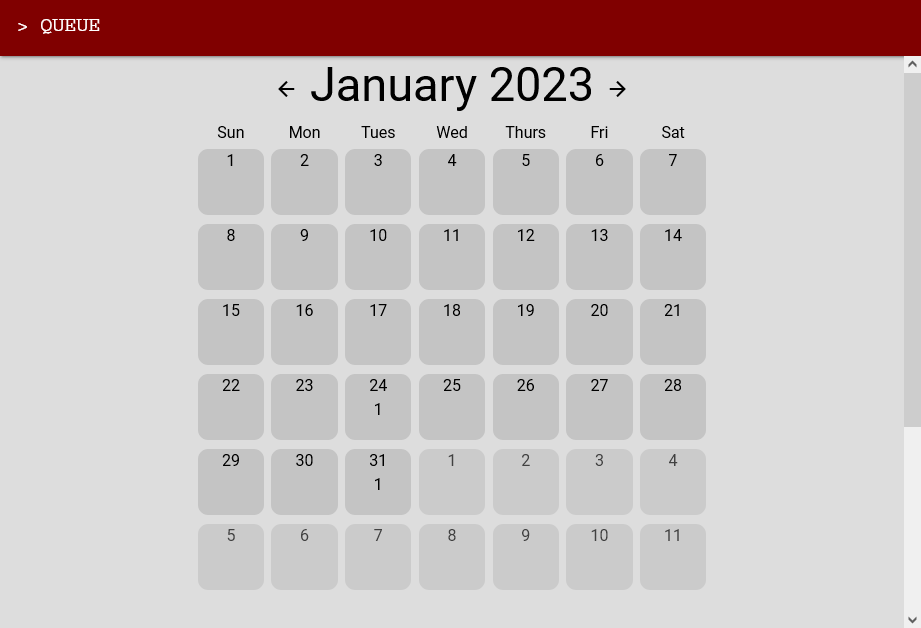
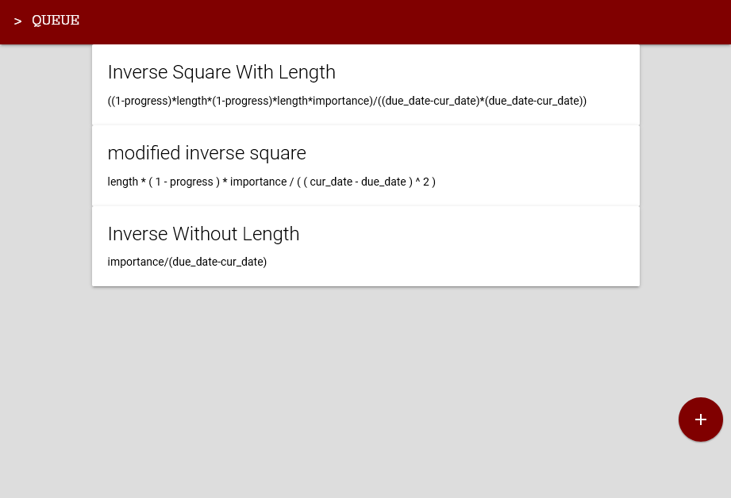
Bookeeper was the final project for my databases course at Rose-Hulman. This project involved developing a database to suggest books to users based on their reviews, and a nodejs frontend. This project was a collaboration with two other students and was developed over the course of 7 weeks.
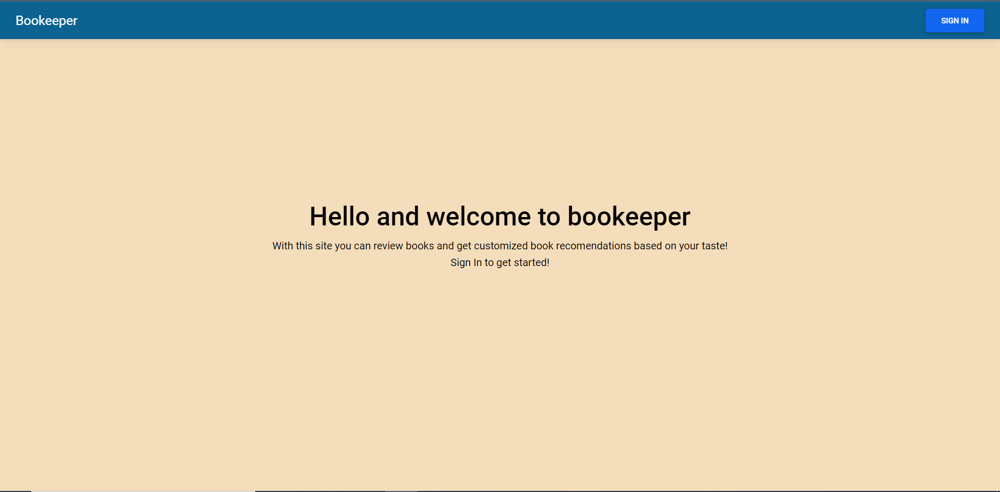
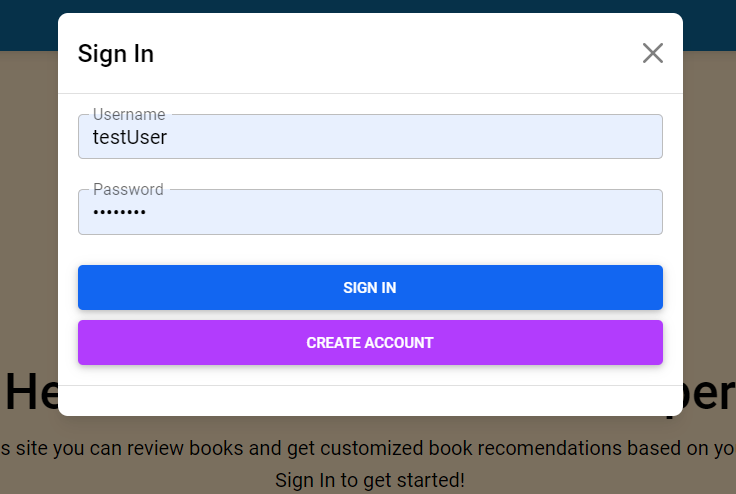
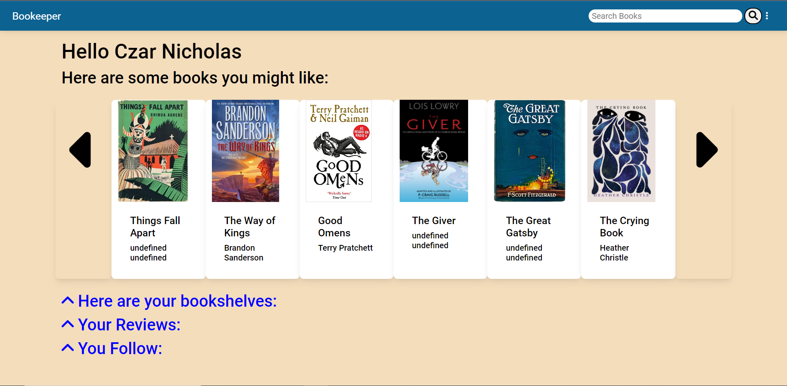
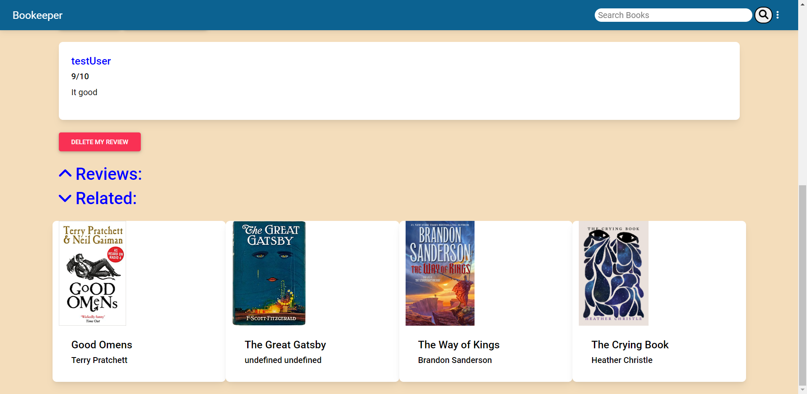
As part of the object oriented software development course at Rose-Hulman, we were given a choice of creating a game, the standard final project, or a genetic algoritm with graphical output. I did the later of these, and over the course of a few weeks created a genetic algorithm with my teammates.
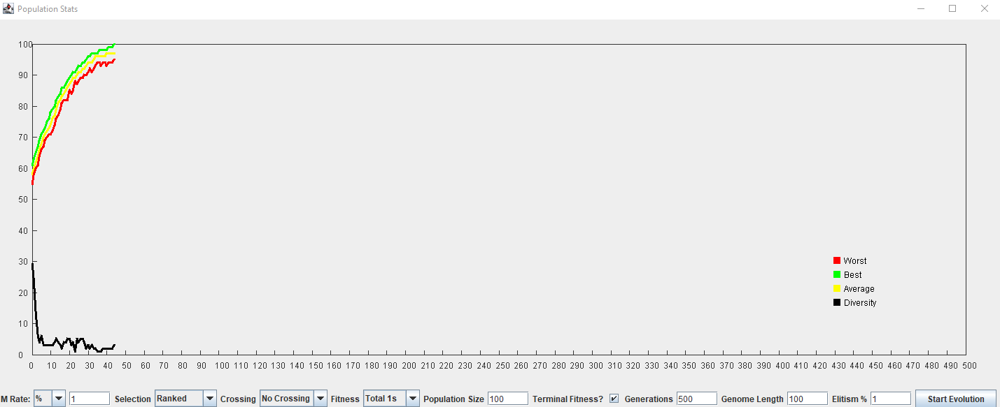
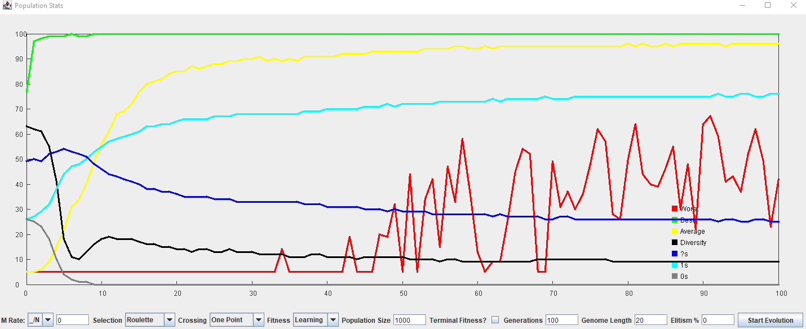
For Computer Architecture the final project was to create a functioning processor with a generalizable instruction set. My group succesfully created an accumulator based processor and instruction set.
The final project for the programming language concepts class is to write an interpreter for the scheme programming language (a subset of PERL). This project required the use of continuations, environments, and closures. The project and class were strong introductions to functional programming.
From 4th grade through senior year of highschool I participated on a FIRST robotics team. On this team I was the lead programmer, working on both atonomous and remote controlled operations of our robots. For the majority of this time I was working in Java, to regulate feedback systems.